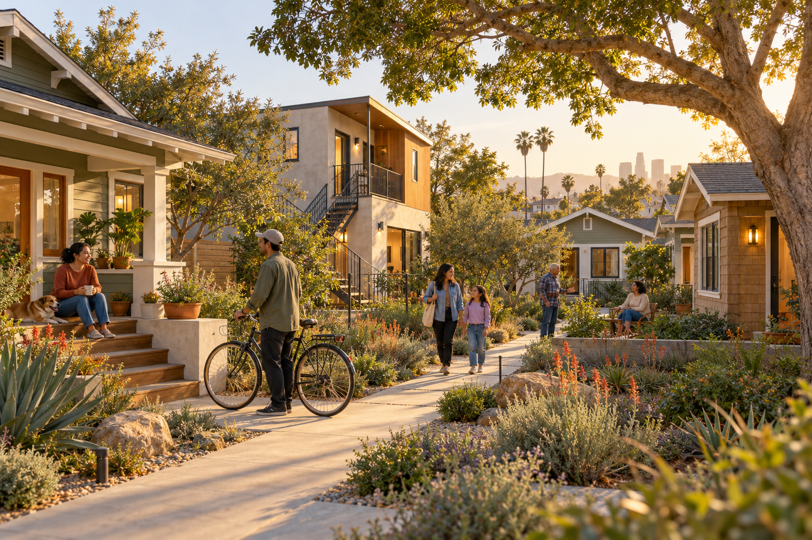
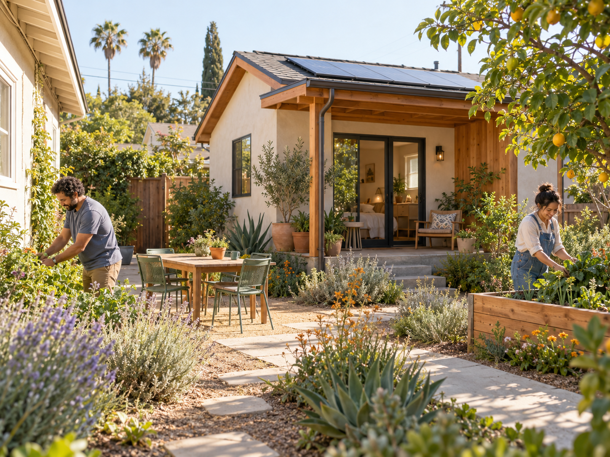

HOOD stewards the land
The trust acquires land and removes it from speculative pressure, holding it for community benefit over the long term.
Housing Opportunities for Ownership & Development
HOOD Community Land Trust is building a path to permanently affordable homes through small sites, thoughtful infill, and long-term community stewardship across Los Angeles County.
A community land trust for Los Angeles County
When the price of land rises, families should not have to leave the neighborhoods they helped build.
HOOD acquires and stewards land for the public good. Homes on that land can be sold or rented at affordable prices, while a renewable ground lease protects the community investment for future households.
Our name says what we are here to create: Housing Opportunities for Ownership & Development.
The community land trust model
The land and the home are treated differently so affordability can last from one household to the next.
The trust acquires land and removes it from speculative pressure, holding it for community benefit over the long term.
An eligible household buys or rents a home on the land and receives the stability, privacy, and responsibilities of home.
A long-term renewable ground lease and resale rules let owners build equity while keeping the home within reach for the next family.
Public and philanthropic investment is preserved instead of disappearing after one sale.
Our development focus
HOOD is designed for practical, scattered-site opportunities—not only large projects that can take many years to complete.

Bring distressed, vacant, or at-risk properties back into use while protecting their affordability.
Explore duplexes, small-home courts, lot opportunities, modular homes, and other context-sensitive solutions.

The neighborhood we see
Permanent affordability is not only about a monthly housing cost. It is about continuity: children staying near their schools, older adults aging near their support networks, and residents having a real voice in what comes next.
“A home can be affordable today and still belong to the community tomorrow.”
Stable housing, a path to ownership, and a partner for long-term stewardship.
Reinvestment without displacement and new homes that respect the existing fabric.
A mission-aligned way to make land, funding, and development capacity last.
Where we are now
HOOD is an emerging California nonprofit public benefit corporation in its organizational and predevelopment stage. We are establishing the policies, partnerships, capital relationships, and property pipeline needed to take on our first sites well.
Get involved
HOOD is seeking mission-aligned relationships that can help turn small opportunities into permanently affordable homes.
Explore a sale, donation, or long-term land arrangement that creates a lasting community benefit.
Bring small-site, rehabilitation, ADU, modular, and neighborhood infill experience.
Help build flexible acquisition capital and patient financing for permanently affordable housing.
Share local knowledge, identify needs and opportunities, and shape community-centered solutions.
Common questions
A community land trust is a nonprofit that owns and stewards land for community benefit. By separating the price of land from the home and using a long-term ground lease, it can make homes more affordable and protect that affordability over time.
Yes. A CLT homeownership program can let an owner build equity while sharing a portion of future appreciation so the home remains affordable to the next eligible buyer.
No. HOOD’s planned work includes acquisition, rehabilitation, preservation, backyard homes, and small infill development. The right approach depends on the site and the neighborhood.
Not yet. HOOD is currently building its organizational capacity and first project pipeline. We will share application and eligibility information when homes become available.
Let’s build something lasting
Have a property, partnership idea, source of funding, or neighborhood connection? We would like to hear about it.